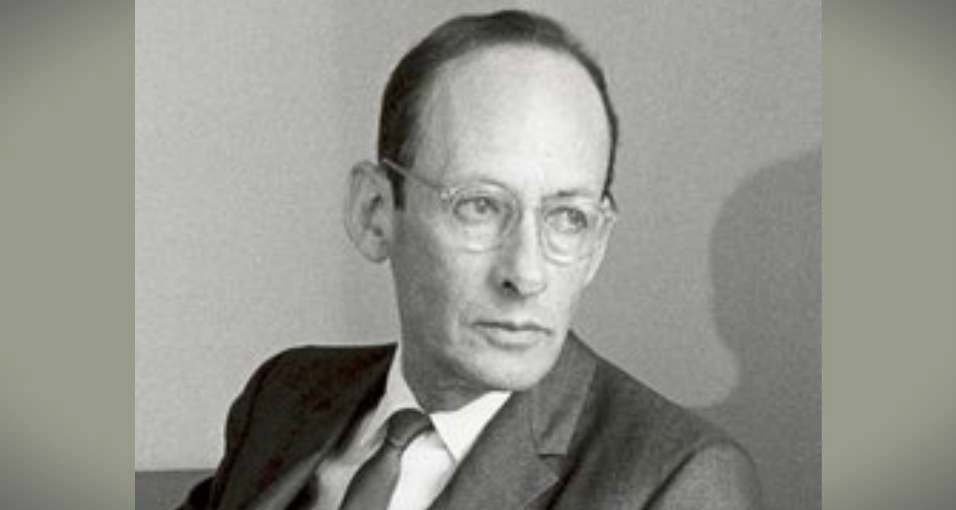

"成长价值投资先驱"——著有《怎样选择成长股》
菲利普·费雪（Philip Fisher，1907-2004），美国著名投资家，成长价值投资的先驱人物。他于1931年创立Fisher & Company，开创了以深入研究企业质地、管理层质量和技术优势为核心的成长股投资方法。费雪所著的《怎样选择成长股》是投资领域的经典之作，其"闲聊法"（Scuttlebutt）调研方法深刻影响了包括巴菲特在内的后辈投资者。巴菲特曾表示自己是"85%的格雷厄姆加15%的费雪"。
想在投资中赚大钱，必须要有耐性。换句话说，预测股价会到达什么价位，往往比预测它多长时间才会达到这个价位要容易得多。
股票市场本质上就有一种欺骗投资者的特性。如果你跟其他所有人做的事情都一样，或者是按照自己内心不可抗拒的渴望去做事，最后的结果往往会证明你的做法是错误的。
企业业务的增长往往跟企业管理层是否懂得如何在各自然科学领域组织研究息息相关。我们可以很清楚的看到，各大高增长公司的一个共同特性就是，管理层不会因为重视长期规划就对日常事务的执行有任何松懈，他们仍会把日常的业务运营工作做得很好。